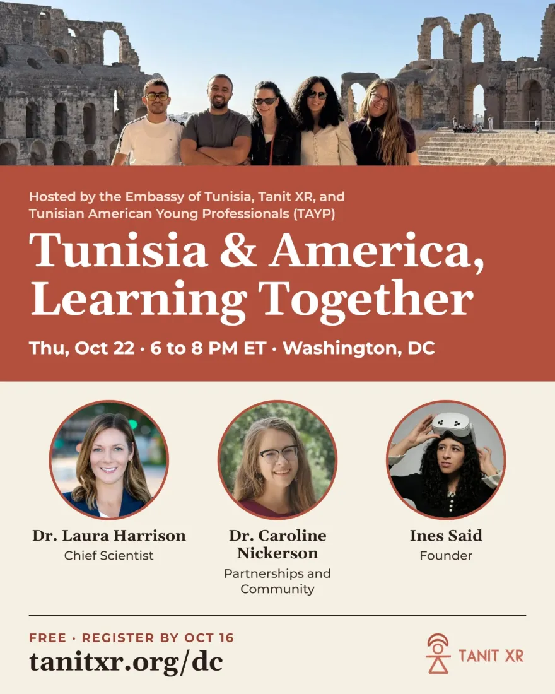
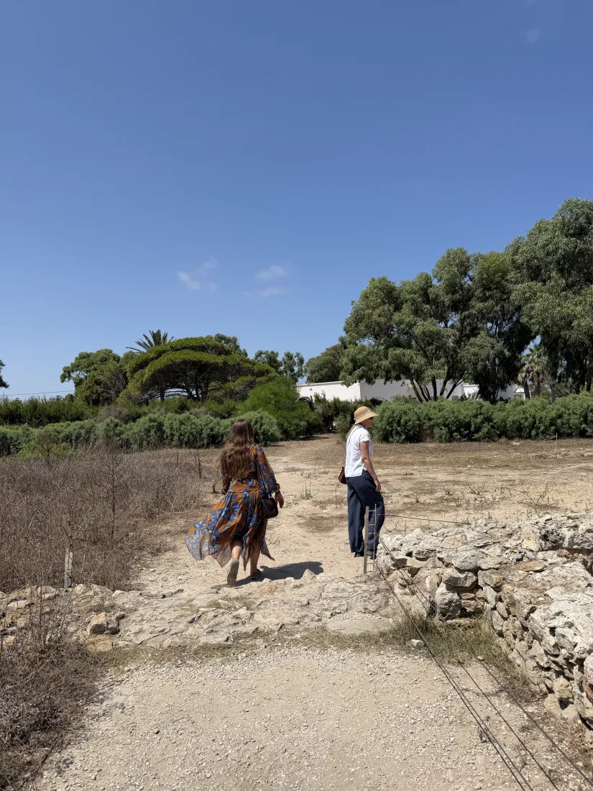
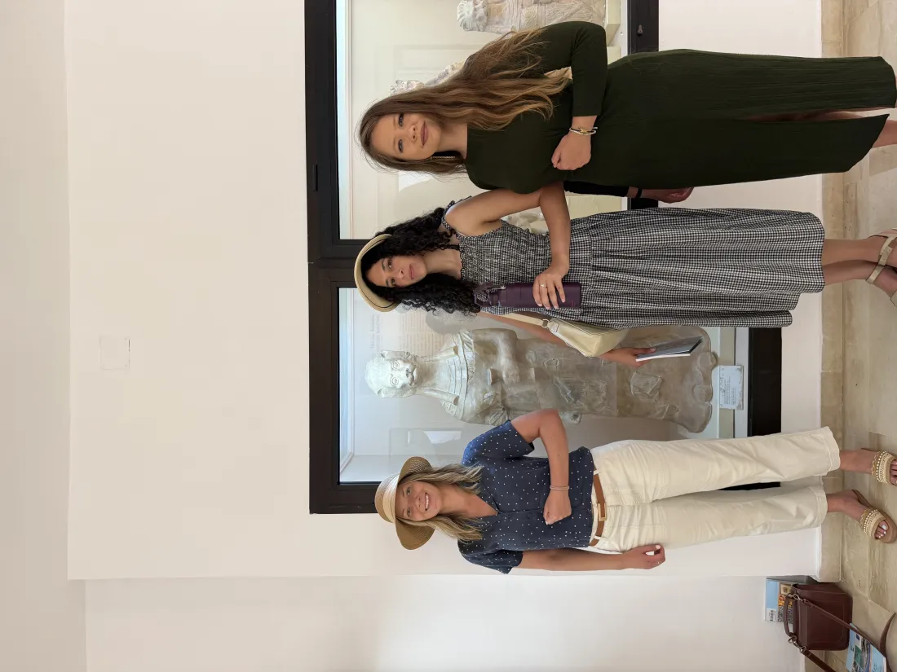

Avec Dr Laura Harrison et Dr Caroline Nickerson, accueillie par l’Ambassade de Tunisie avec Tanit XR et TAYP. Les places sont limitées, merci de vous inscrire ci-dessous.
Votre confirmation et les détails de la soirée arrivent par e-mail. Questions : info@tanitxr.org.



Au cours de l’année écoulée, Dr Laura Harrison et Dr Caroline Nickerson ont été au cœur de Tanit XR : elles ont dirigé son programme scientifique, noué des partenariats avec des universités et des institutions, animé des hackathons et des ateliers, et se sont rendues en Tunisie cet été pour travailler aux côtés de collègues tunisiens, sur les sites mêmes. Elles parleront de cette année, de ce qu’elles ont vu et de la suite. Ines Said, fondatrice de Tanit XR, ouvre la soirée en racontant pourquoi une développeuse tunisienne a commencé à numériser Carthage avec un téléphone, et présente la collection en direct.
Tanit XR documente le patrimoine tunisien par photogrammétrie, lidar et Gaussian splatting, souvent à l’aide de simples téléphones, par des bénévoles formés, et met les résultats à la portée de tous, partout dans le monde, dans un navigateur, un casque ou un musée virtuel. La collection est déjà ouverte sur tanitxr.org/explore, et des casques de réalité virtuelle seront sur place pour celles et ceux qui voudraient y entrer.
Tanit XR est porté par des bénévoles de nombreux pays, dont la plupart n’avaient aucun lien avec la Tunisie à leur arrivée. Ils se réunissent chaque semaine, étudient ensemble l’histoire tunisienne, et plusieurs sont depuis allés en Tunisie ou parlent aujourd’hui de son patrimoine dans leur propre ville. Cet échange, avec la technologie comme passerelle, est le cœur de la soirée. Tunisiens et amis de la Tunisie sont les bienvenus au même titre ; les étudiants tout particulièrement ; aucune connaissance technique n’est nécessaire.
Archéologue spécialiste de la documentation numérique, du lidar et de la photogrammétrie aux technologies immersives, elle a été la directrice fondatrice de l’Access 3D Lab à l’University of South Florida, et a travaillé dans des musées comme le Smithsonian et le New York State Museum. Elle est l’autrice de deux livres sur l’archéologie et le patrimoine numérique, rédactrice associée de la revue Studies in Digital Heritage, et membre de la commission de préservation du patrimoine historique de la ville de Tampa.
Directrice exécutive et cofondatrice de Florida Community Innovation, l’organisation à but non lucratif qui assure le parrainage fiscal de Tanit XR. Son travail réunit engagement civique, technologie d’intérêt public et science participative, notamment avec SciStarter, CitSci et le projet EMERGE financé par la NASA. Elle est titulaire d’un doctorat en éducation et communication agricoles de l’University of Florida et d’un Master of Public Policy de l’American University.
Artiste et développeuse XR tunisienne, originaire de Nabeul. Son travail a été présenté dans l’exposition FUTURES du Smithsonian ; elle est finaliste des Auggie Awards 2026, l’une des 30 Under 30 de la NAAEE et intervenante à AWE. Elle a fondé Tanit XR pour mettre le patrimoine tunisien entre les mains de tous, partout, et a bâti la communauté de bénévoles qui le fait aujourd’hui. Elle ouvre la soirée et présente la collection en direct.